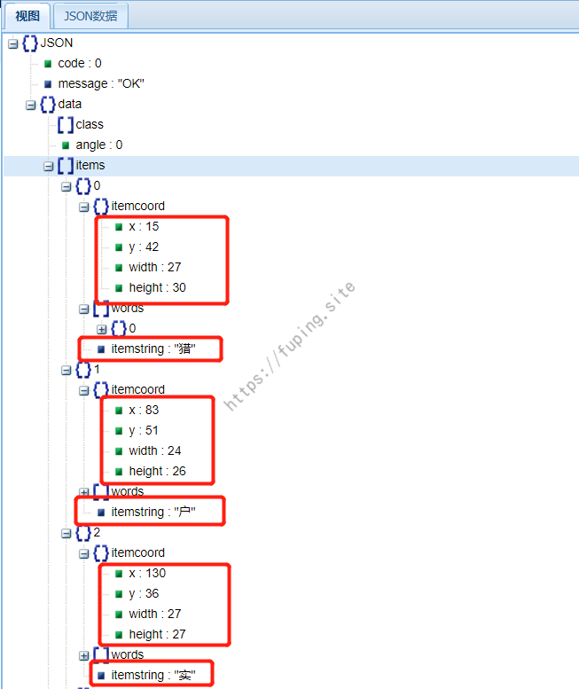
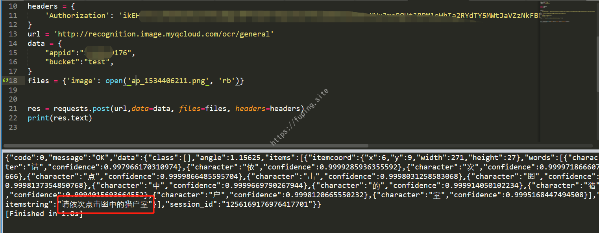

中文点选验证码自动识别
某次测试中遇到了汉字点选的验证码，看着很简单，尝试了一下发现有两种简单的识别方法，终于有空给重新整理一下，分享出来。
0x01 验证码的获取
首先获取验证码。由于网站比较特殊，就不以他们的为例，自己生成验证码吧。这个不是重点，这里直接贴代码了。
1 |
|
运行后生成这样两张图片。
ap_XXXXX.png
mp_XXXXX.png
ap_XXXXX.png是说明需要点击的文字，mp_XXXXX.png是需要点击的图片。
0x02 验证码识别
对于这种简单的点选验证码，可以有两种很容易的识别方式（机器学习算麻烦的，这里就不列出了。嗯，对，我也不会）。一种是opencv的图像模板匹配，另外一种是OCR识别。
1. opencv的图像模板匹配
第一种方式，使用opencv的图像模板匹配。模板匹配是一种在较大图像中搜索和查找模板图像位置的方法，opencv2和opencv3中提供了一个专门用于模板匹配的函数matchTemplate()。它是在输入图像上滑动模板图像（如在2D卷积中），并比较模板图像下的输入图像的模板和补丁。在OpenCV中实现了六种比较方法（这里用到的是cv2.TM_CCOEFF_NORMED），它返回一个灰度图像，其中每个像素表示该像素的邻域与模板匹配的程度。
获得结果后，可以使用cv.minMaxLoc（）函数查找最大/最小值的位置。将其作为矩形的左上角，并将（w，h）作为矩形的宽度和高度，那个矩形就是模板区域。 。
我们进行使用模板匹配来识别这种验证码时，首先先将“模板”找出来，这里我们需要匹配的是“猎”、“户”、“室”这三个字。将这三个字所在的图片进行截取，然后使用matchTemplate()函数在mp中进行匹配。
首先截取第一个字“猎”。
截取之后，就可以在mp中进行匹配。
这里得到了最大和最小位置。我们使用最大位置，然后将最大值作为阈值。获取模板的尺寸，然后在mp中用矩形（红色区域）画出匹配的区域。如下所示。
同理，用黄色和蓝色矩形将“户”、“室”所在的区域画出来。

点选时发送所选区域中间的坐标即可，这里就不再给出实例了。
这种方法虽然简单，但是对于字体不一的就不能很正确的标记出来。
修改生成图片的代码，将mp中的文字的字体设置为随机。
修改的代码如下：
1 | switch ($type) { |
ap生成的结果还是和之前一样，mp的图片如下：
使用同样的代码来匹配。
此时匹配的结果就有些惨不忍睹了。所以就换另外一种识别方式-ocr识别。
2. OCR识别
这里采用的是腾讯云的OCR-通用印刷体识别。
参考文档。输入mp图片，返回的是json。
查看json内容，发现包含了图片中的文字、位置和大小等。

同理ap中内容也可以获取。

此时匹配的时候直接就是匹配文字了。首先获取ap中后三个文字，然后与mp中返回的内容匹配，获取其位置和大小，然后再画矩形即可。
由于比较简单，这里直接贴结果。
匹配相当完美。
0x03 总结
本文用了两种方法来自动识别汉字点选验证码，第一种采用的是opencv的模板匹配，这种方法虽然也可以匹配到，但这种方法缺点就是对于字体形状差异较大的验证码识别率较低。而第二种方法就比较快捷方便了，而且识别度高，比较推荐第二种方法。
当然这两种方法对于简单、“正规”的验证码可以，遇到复杂的、“扭曲的”验证码就不行了。这时候就要用到机器学习了，而本文只是简单的“识别”，将机器学习用到这里，就有些大材小用了。
相关代码：https://github.com/fupinglee/MyPython/tree/master/captcha/Pointselection
0x04 参考
[1] http://bluewhale.cc/2017-09-22/use-python-opencv-for-image-template-matching-match-template.html